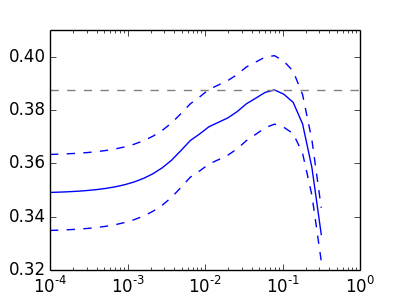

Cross-validation on diabetes Dataset Exercise¶
A tutorial excercise which uses cross-validation with linear models.
This exercise is used in the Cross-validated estimators part of the Model selection: choosing estimators and their parameters section of the A tutorial on statistical-learning for scientific data processing.
Script output:
Answer to the bonus question: how much can you trust the selection of alpha?
Alpha parameters maximising the generalization score on different
subsets of the data:
[fold 0] alpha: 0.00030, score: 0.49984
[fold 1] alpha: 0.00053, score: 0.10660
[fold 2] alpha: 0.00030, score: 0.44419
Answer: Not very much since we obtained different alphas for different
subsets of the data and moreover, the scores for these alphas differ
quite substantially.
Python source code: plot_cv_diabetes.py
from __future__ import print_function
import numpy as np
import pylab as pl
from sklearn import cross_validation, datasets, linear_model
print(__doc__)
diabetes = datasets.load_diabetes()
X = diabetes.data[:150]
y = diabetes.target[:150]
lasso = linear_model.Lasso()
alphas = np.logspace(-4, -.5, 30)
scores = list()
scores_std = list()
for alpha in alphas:
lasso.alpha = alpha
this_scores = cross_validation.cross_val_score(lasso, X, y, n_jobs=1)
scores.append(np.mean(this_scores))
scores_std.append(np.std(this_scores))
pl.figure(figsize=(4, 3))
pl.semilogx(alphas, scores)
# plot error lines showing +/- std. errors of the scores
pl.semilogx(alphas, np.array(scores) + np.array(scores_std) / np.sqrt(len(X)),
'b--')
pl.semilogx(alphas, np.array(scores) - np.array(scores_std) / np.sqrt(len(X)),
'b--')
pl.ylabel('CV score')
pl.xlabel('alpha')
pl.axhline(np.max(scores), linestyle='--', color='.5')
##############################################################################
# Bonus: how much can you trust the selection of alpha?
# To answer this question we use the LassoCV object that sets its alpha
# parameter automatically from the data by internal cross-validation (i.e. it
# performs cross-validation on the training data it receives).
# We use external cross-validation to see how much the automatically obtained
# alphas differ across different cross-validation folds.
lasso_cv = linear_model.LassoCV(alphas=alphas)
k_fold = cross_validation.KFold(len(X), 3)
print("Answer to the bonus question:",
"how much can you trust the selection of alpha?")
print()
print("Alpha parameters maximising the generalization score on different")
print("subsets of the data:")
for k, (train, test) in enumerate(k_fold):
lasso_cv.fit(X[train], y[train])
print("[fold {0}] alpha: {1:.5f}, score: {2:.5f}".
format(k, lasso_cv.alpha_, lasso_cv.score(X[test], y[test])))
print()
print("Answer: Not very much since we obtained different alphas for different")
print("subsets of the data and moreover, the scores for these alphas differ")
print("quite substantially.")
pl.show()
Total running time of the example: 3.01 seconds ( 0 minutes 3.01 seconds)